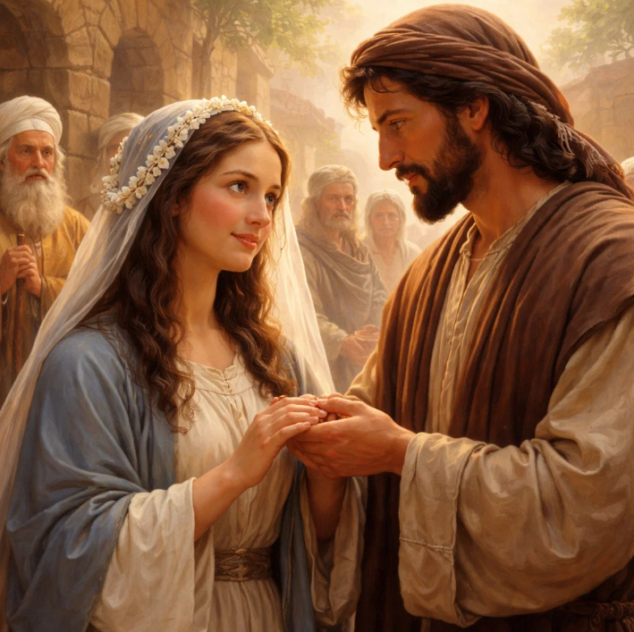
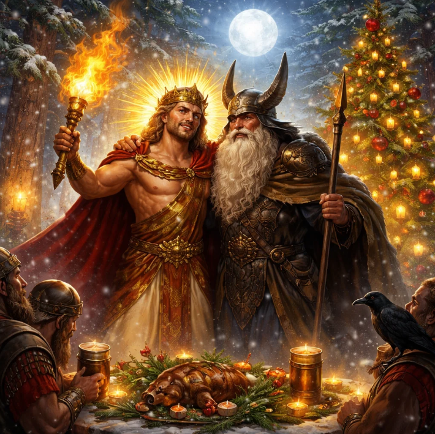

Nașterea lui Isus – o poveste imposibilă?
Nașterea lui Isus – o poveste imposibilă?
24 decembrie. Ajun de Crăciun.
Luminițe, cadouri, colinde...
dar oare știm ce sărbătorim cu adevărat?
Vă invit la o călătorie sinceră prin istorie și logică.
Fără ură, doar fapte. Începem cu întrebarea esențială:
Povestea nașterii lui Isus ar fi supraviețuit măcar o zi în contextul iudaic al epocii?
Răspunsul scurt: Nu. Zero șanse.
Maria și legea iudaică – de ce ar fi fost lapidată

Maria era logodită cu Iosif.
În legea iudaică biblică (Deuteronom 22:23-24),
logodna = căsătorie în ceea ce privește fidelitatea.
O fecioară logodită care rămâne însărcinată cu altcineva = adulter.
Pedeapsa: lapidare cu pietre. Public.
Pentru amândoi. Sarcina devine vizibilă.
Vecinii vorbesc. Autoritățile intervin.
Iosif ar fi fost implicat și el – fie ca victimă, fie ca suspect.
Într-o comunitate mică și ultra-religioasă? Secretul nu ține.
Povestea nu apucă să ajungă la iesle.
Yahweh nu se întrupează – blasfemie pură

Legea iudaică spune:
Dumnezeu (Yahweh) este transcendent, incorporeal, infinit.
Ideea că El s-ar întrupa într-un om? Blasfemie gravă.
O încălcare a monoteismului pur – interzis categoric să asociezi divinul cu materia umană.
Maria, crescută în această credință, primește un înger care spune:
„Vei naște pe Fiul lui Dumnezeu.”
Reacția ei logică? Nu bucurie, ci teamă.
Ar fi văzut anunțul ca pe o înșelăciune demonică sau o iluzie periculoasă.
O astfel de pretenție = erezie imediată. Nimeni nu ar fi crezut-o. Toți ar fi acuzat-o.
Pedeapsa: lapidare cu pietre. Public.
Nașterea lui Isus – imposibilă istoric și religios

Rezumat:
Fapt 1: legea iudaică condamnă adulterul cu pedeapsa supremă
Fapt 2: conceptul religios definește Dumnezeu ca fiind transcendent, incorporeal și infinit
(fără excepție; orice derivare de la această definiție este considerată blasfemie – pedeapsa supremă)
Ideea unei nașteri divine devine imposibilă.
Atât din punct de vedere social, cât și religios, povestea nașterii lui Isus nu ar fi putut supraviețui în realitatea acelei epoci.
Așadar, data de 25 decembrie și întreaga naștere sunt mai mult mituri construite ulterior, decât evenimente istorice verificate.
Crăciunul – o sărbătoare păgână reambalată

Biblia nu spune când s-a născut Isus.
Social-tehnic, nașterea lui Isus în 25 decembrie rămâne un mit imposibil
--> din motivele deja menționate mai sus.
Istoricește, iarna e improbabil (păstorii nu stăteau noaptea afară).
Atunci de ce 25 decembrie?
Pentru că Biserica timpurie (secolul IV) a suprapus sărbătorile păgâne existente:
• Saturnalia romană (17-23 dec): petreceri, cadouri, decorațiuni
• Sol Invictus (25 dec): renașterea soarelui la solstițiu
• Yule germanic/nordic – buștean ars, brad veșnic verde, ritualuri de fertilitate
Pomul de Crăciun? Origine păgână 100%.
Strategie deliberată:
să nu deranjeze popoarele păgâne, ci să le "creștineze" tradițiile.